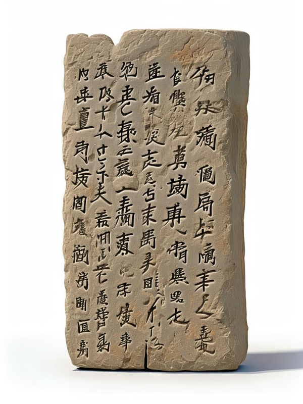
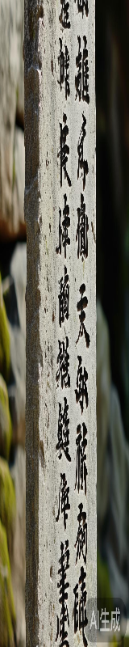

张迁碑
东汉晚期碑刻，隶书书法代表作，具有重要的历史与艺术价值
碑文图片

收藏时间
2023-11-15
识别时间
2023-11-14
文字数量
823字
识别置信度
97.6%
标签
东汉碑刻
隶书
书法艺术
添加标签
详细校对
第 1 列 / 共 12 列

原始碑文
维
大
唐
开
元
二
十
有
九
年
岁
次
辛
巳
秋
八
月
丁
丑
朔
十
三
日
己
丑
识别文字
维
大
唐
开
元
二
十
有
九
年
岁
次
辛
巳
秋
八
月
丁
丑
朔
十
三
日
己
丑
校正结果